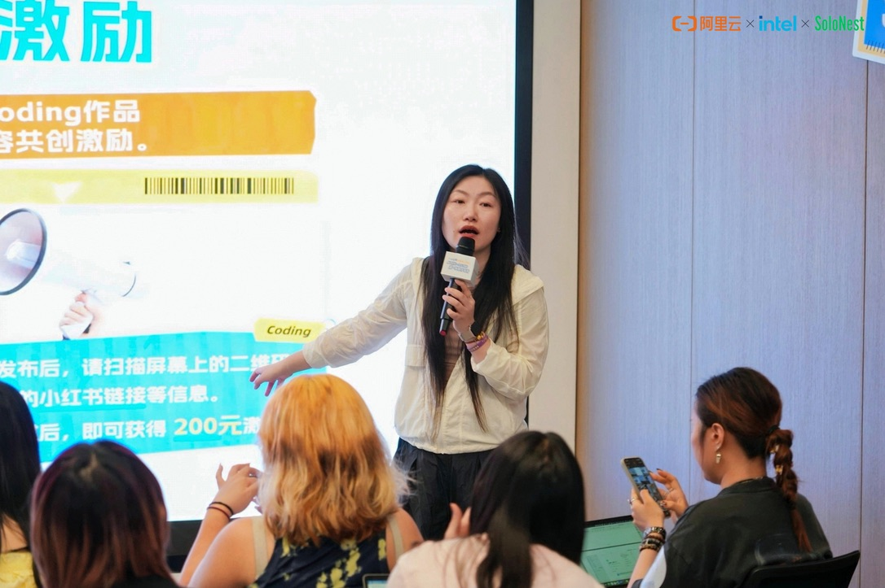
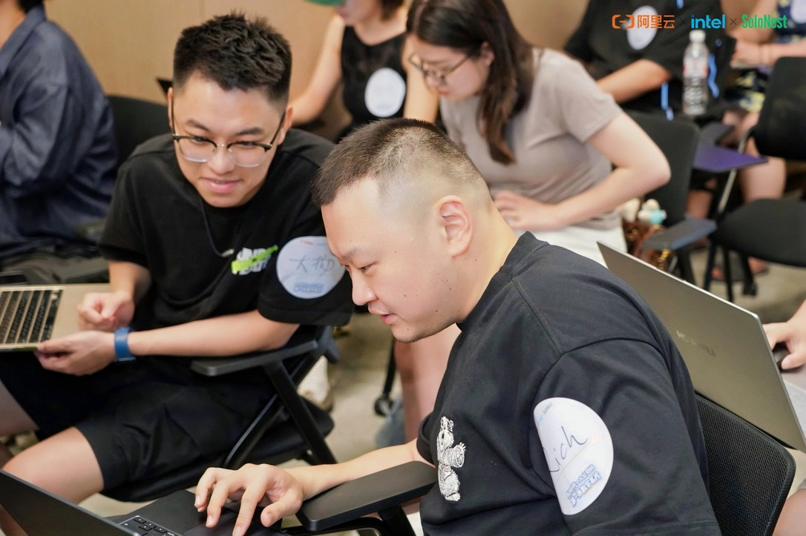
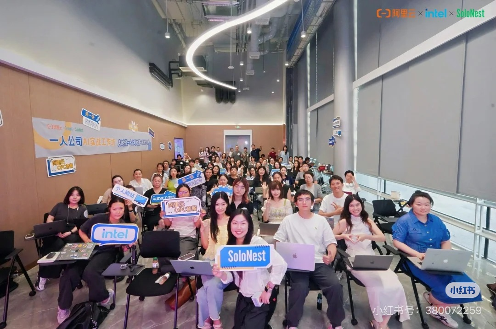

今天参加阿里云 × Intel × SoloNest 的「一人公司 AI 实战工作坊」

我的预期重点是怎么做网站；but，我发现最难的不是技术，而是：
「我是谁，我在做什么，你为什么要认识我？」
因为现在做网站门槛真的太低了。
以前还要学CSS、wordpress、配置服务器域名部署…今天我现场2小时就搓完了自己的主页（欢迎访问我的主页见最后一张图）

反而真正难的是内容。
当我开始做个人网站的时候，我会被迫去回答：
- 我想做啥？
- 我能给你提供啥？
- 你为啥来找我而不是别人？
我原来一直觉得工具重要，但是AI时代我反而觉得：
内容比工具重要得多。
因为 AI 会让「做出来」越来越容易，但人与人的差距，可能会越来越体现在想法、经历和持续输出的内容上。
